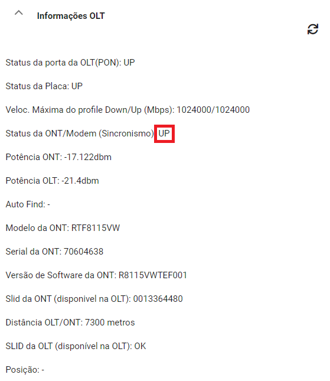

Como verificar alarme via Putty

Como converter Slot e Porta para Cabo e Primária via Sigres

Primeiro passo é necessário validar se realmente se trata de um atendimento de sem sincronismo, pois é muito comum o técnico informar que está sem sincronismo más na verdade é sem autenticação. Para validar se o cliente está realmente sem sincronismo é necessário observar na aba "INFORMAÇÕES OLT" se o sincronismo está em "DOWN", como na imagem abaixo:
Após vamos validar se a foto da caixa está de acordo com o sistema, tanto cabo e primaria quanto AT devem estar de acordo com o SDU (Caso a AT esteja divergente, é necessário que o técnico faça a instalação na AT designada, ou entre em contato com a regional, pois CO NÃO FAZ MANOBRA DE AT).
Agora validamos se o cliente tem vlan:
Não sendo possível criar vlan pelo sdu ou caso de vlan em DOWN realizar check list via helper para OLTS Alcatel 7360/7302 e Huawei, em caso de caso de Alcatel 7342 é necessário:
Caso esteja tudo certo com a posição do seu cliente e ele não esteja com vlan duplicada (em caso de Huawei ou Alcatel 7342) o cliente vai sincronizar.
Caso não sincronize o próximo passo é a busca de alarme, você pode buscar via helper ou putty, dúvidas de como buscar alarme via putty clique aqui.
(Vale lembrar que em caso de OLT Alcatel 7342 o ideal é buscar alarme com as vlans deletadas.)
Agora o atendimento pode tomar alguns rumos:
Alarme divergente;
Alarme não localizado;
Alarme na posição correta;